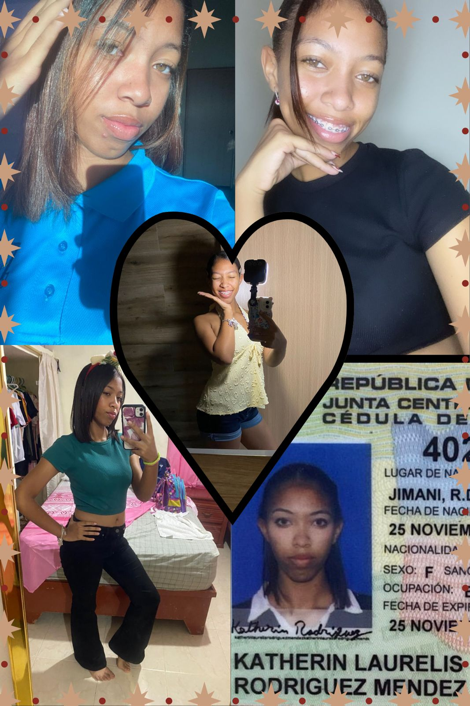

Mi Libro Para Ti 💗
Para mi amor, Katherin


Este es katherin, mi más sincero y profundo regalo dedicado para ti, en este día de san Valentín.
Este librito cuenta con 4 preciados capitulos:
- Capitulo 1: “1 de Enero”
- Capítulo 2: “Gracias”
- Capítulo 3: “🌹”
- Capítulo Final: “siempre, Siempre.”
Para ver todo el texto puedes bajar deslizando con el dedo en la pantalla, cuando finalices cada punto, puedes continuar dando click en el botón de siguiente.
Katherin Laurelis Rodríguez Méndez, esto va dedicado hacia ti mi amor. 💗
¿Sabes? Lo más difícil de escribir sobre lo que sientes, es como empezar, de verdad, no se cómo empezar, y es Irónico porque tengo tantas cosas que decirte que ni siquiera se pueden resumir en este libro, así que quiero que sepas que lo que verás en este libro, solo es una parte de lo tanto que quiero decirte, de lo tanto que te quiero.
Digamos que soy alguien con muchos defectos, al igual que todas las personas, supongo, pero trato de ser mejor, trato de querer bien a las personas que me permiten quererlas, me alegro del poder estar para las personas que quiero, para mi familia, para mi mamá, para ti.
Realmente me sorprende como en un mes me he encaprichado tanto contigo, como te quiero tanto, como me haces sentir, lo tanto que te pienso, me sorprende, porque quien diría que de verdad quiero un futuro contigo, sé que somos jóvenes los dos, pero, no tenemos que tener 50 años para por fin saber lo que queremos, a quien amar, no tenemos que tener 5 años de relación para poder asegurar que quiero estar contigo.
Me sorprende lo tanto que te amo, me sorprende como todo esto, todo este amor, todo este regalo, como nuestra relación empezó de un día para otro, sin saber incluso nuestros nombres completos, porque no es como empiece, es como termine, no, no. Es como nos amemos mientras estemos, y quiero que dure hasta que muera. Por eso me sorprende katherin, porque es increible como todo esto empezó, un 1 de enero.
Quiero aprovechar este espacio para expresarme contigo desde lo más profundo de mi corazón, aunque sé que sabes lo mucho que te quiero, lo muchísimo que lo hago.
Katherin, gracias, gracias por todo lo que me has dado. Tu amor, tu tiempo, por todo, de verdad.
En estas palabras que te estoy diciendo, estoy reflejando lo que dice mi corazón, y que siempre, siempre quiero que sepas que te amo, con todo mi ser, me siento un poco vulnerable el estar reflejando mis sentimientos así, pero no me importa, solo digo lo que siento, y es eso, que te quiero, que te pienso muchísimo, que me he visualizado contigo en un futuro, el futuro que quiero.
Gracias por tratarme bien, gracias por escucharme, gracias por estar ahí para mí, gracias por elegirme, gracias por compartir conmigo, gracias por quererme, gracias por ser tú, por los buenos días de las mañanas, por las buenas noches, por cada mensaje, por cada segundo que me otorgas, gracias por la confianza, gracias por brindarme tanto tu cuerpo como tu Corazón, el cual prometo cuidar, siempre.
Siento a veces, que no soy lo que mereces, pero no voy a menospreciar a mi persona preguntando que por qué, que por qué yo, solo disfrutaré el estar contigo, el poder tenerte, así que, de verdad, gracias por amarme. Te juro por mi alma que yo te amo con mi vida, que no se te quede ni un pelito de duda, nunca.
Desde los más profundo de mi corazón, de mi alma, de mi ser. Gracias.
He estado pensado en ti como una de las cosas más bonitas de este mundo; una rosa 🌹.
Un objeto hermoso, que representa muchas cosas desde el punto de vista de cada persona, muchos las ven raras, otros las ven hermosas, o sensibles, dolorosas, por sus espinas, tristes, si se ven decaidas, perfectas, cuando tienen rasgos unicos.
La mayoría de las rosas crecen con defectos, y eso las hace más bonitas en mi opinión, donde muchos ven irregularidades, otros ven la verdadera perfección, donde tu ves imperfecciones sobre tu cuerpo u sobre tu forma de ser, yo veo una belleza de persona, yo veo algo unico, y el solo hecho de pensar que esa belleza, que tù, estàs conmigo, me hace ser el mas feliz.
Tu mi amor, al igual que las rosas eres delicada, sensible, bonita, preciosa… Y eso eres tú para mi, mi rosa 🌹. Te amo katherin.
Katherin Lurelis Rodriguez Mendez. Mi amor, mi vida.
Gracias por confiarme tu corazón, por abrir tu GRAN y perfecto corazón hacia mí, demostrarme lo tanto que me quieres, lo aprecio con mi alma. Aprovecho aquí, para también contarte algunos de mis miedos, que son; no poder darle a mami una vida que se merece.
No poder convertirme en una persona que los demás admiren o, no poder hacer nada en mi vida.
Creo que tengo una mente que hará muchas cosas, lo siento en mi ser, y sé que ir haciendo lo que me guste, lo que me llame, lo que siento que debo hacer, con eso ya estaré marcando la persona a la que aspiro ser.
Te preguntaràs que a qué viene el yo contarte mis miedos en algo de amor. Pues, esto lo digo porque hay un miedo en específico que se ha convertido en lo que menos quiero, y ese es el miedo de no poder hacer una vida contigo, el miedo de perderte.
No solo por miedo a que te canses de mí, o te enamores de alguien más, lo digo porque somos jóvenes, y no sabemos que nos deparará la vida, no sè para dónde irás a estudiar. ¿Y si te alejas de mí, aunque no quieras? ¿Y si te obligan a dejarme? Esto es lo que más me aterra.
Por eso quiero pedirte que ames, aprendas, te esfuerces, porque quiero verte feliz, logrando cosas, que te gusten cosas, por eso mis ganas de querer ayudarte, aunque se muy claro que no soy Dios, no soy un ángel, no soy psicólogo, pero te amo, y quiero que disfrutes este regalo tan maravilloso llamado vida, para que seas feliz estando o no estando conmigo.
Te lo dice alguien que se cuestiona cada noche si estoy haciendo las cosas bien, si de verdad podrè ayudar a los que me ayudaron a mí. Mi amor, ambos tenemos nuestros problemas, no minimices los tuyos.
De verdad me siento muy mal al notar lo tanto que sobrepiensas, en sucesos que no te han favorecido, como has pasado por cosas tan fuertes, como has aguantado tantas cosas, por eso mi insistencia en que me cuentes, pero, también he entendido que, al fin y al cabo, hay cosas que aunque quieras, simplemente no puedes contarme, porque yo también tengo cosas así de fuertes. Te comprendo katherin. No debo forzarte a contarme tus miedos y experiencias malas. Solo ten en mente que tienes a alguien dispuesto a escucharte. Solo eso.
Te juro katherin que cambiarè cada día para poder verte lo mas feliz conmigo, y lo mas feliz sin estarlo. Lamento lo malo que te he hecho pasar, perdòname. Quiero que sepas también, que por más bonito que veas esto, yo no soy un santo, he hecho cosas malísimas, y seguramente, seguiré haciendo cosas malas, porque somos humanos, nos equivocamos, pero donde debemos marcar quienes somos, es si al final de una caída podemos levantarnos, y eso es lo que hago y quiero que hagas, mañana tal vez cometas un error, no te culpes por eso, intenta que el otro día sea mejor. Eso, hace la diferencia.
Gracias por estar.
Gracias por confiar.
Gracias por ser parte de mi historia.
Te quiero mi vida. Mi amor. Mi rosa.
Y siempre lo haré, Siempre.